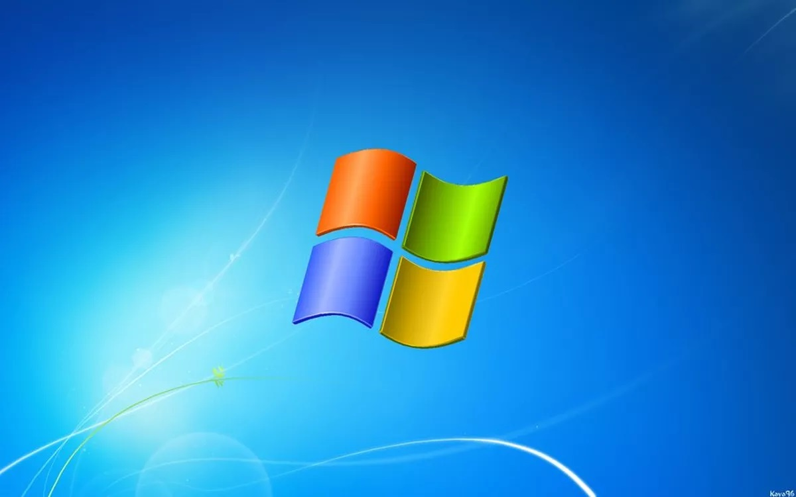

Sistemas Operativos
Um sistema operativo (SO) é um software que atua como uma interface entre o hardware do computador e o usuário. Ele é essencial para o funcionamento de qualquer dispositivo de computação e desempenha um papel crucial na execução de tarefas básicas e no gerenciamento de recursos.
Funções Principais
- Gerenciamento de Recursos: Um SO gerencia os recursos de hardware, como processadores, memória, dispositivos de armazenamento e periféricos. Ele aloca e desaloca recursos conforme necessário para executar programas.
- Interface do Usuário: Fornece uma interface para interação entre o usuário e o computador. Pode ser uma interface gráfica (GUI) ou uma interface de linha de comando (CLI), dependendo do tipo de SO.
- Execução de Programas: Carrega e executa programas de aplicação, garantindo que tenham acesso aos recursos necessários para funcionar corretamente.
- Controle de Acesso: Gerencia o acesso aos recursos do sistema, garantindo a segurança e a integridade dos dados.
Tipos de Sistemas Operativos
- Sistemas Operativos de Desktop: Projetados para computadores pessoais e laptops. Exemplos incluem Windows, macOS e Linux.
- Sistemas Operativos de Servidor: Projetados para gerenciar servidores e redes. Exemplos incluem Windows Server, Linux Server e Unix.
- Sistemas Operativos Móveis: Projetados para dispositivos móveis, como smartphones e tablets. Exemplos incluem Android, iOS e Windows Mobile.
Importância dos Sistemas Operativos
Os sistemas operativos são essenciais para a eficiência e usabilidade dos computadores. Eles fornecem uma plataforma para execução de software, facilitam a interação do usuário e garantem a alocação eficiente de recursos.
Exigências do Sistema Operativo quanto às Capacidades do Equipamento
As exigências do sistema operativo em termos de capacidades do equipamento podem incluir requisitos mínimos de hardware, como processador, quantidade de RAM, espaço em disco e requisitos gráficos. Por exemplo, um sistema operativo moderno pode exigir um processador de pelo menos 2 GHz, 4 GB de RAM e 20 GB de espaço em disco. Conhecer esses requisitos é crucial para garantir que o hardware do computador atenda às necessidades do sistema operativo escolhido.
Instalação do SO a Partir de Periféricos
A instalação do sistema operativo geralmente é realizada a partir de periféricos de armazenamento, como DVDs, USBs ou até mesmo através de downloads online. Durante o processo de instalação, o usuário é guiado por um assistente que facilita a transferência de arquivos essenciais do sistema operativo para o dispositivo de armazenamento principal do computador.
Seleção de Opções na Instalação
Ao instalar um sistema operativo, o usuário é frequentemente solicitado a fazer escolhas importantes. Isso pode incluir a seleção do idioma, a escolha de partições de disco, a configuração de detalhes de rede e a aceitação de termos de licença. Essas escolhas influenciam a forma como o sistema operativo será configurado no dispositivo.
Definição do Plano de Configuração de Periféricos
Após a instalação, é necessário configurar os periféricos do sistema, como impressoras, scanners, câmeras, etc. O usuário pode precisar instalar drivers específicos para garantir a compatibilidade e o funcionamento adequado desses dispositivos com o sistema operativo.
Definição do Modelo de Logins
O modelo de logins em um sistema operativo é a maneira como os usuários acessam o sistema. Envolve a criação de contas de usuário com nome e senha, podendo ser locais, de rede ou online. Os mecanismos de autenticação, como senhas ou biometria, garantem a segurança. Políticas de privacidade e segurança limitam o acesso, e ao fazer login, os usuários encontram um ambiente personalizado conforme suas configurações. Esse modelo assegura a identificação segura, controle de acesso e uma experiência adaptada para cada usuário.
Configuração do SO de Acordo com as Necessidades de Cada Utilizador
Os sistemas operativos muitas vezes oferecem personalização para atender às necessidades individuais dos usuários. Isso inclui configurações de aparência, preferências de sistema, configurações de privacidade e acessibilidade. A capacidade de ajustar o sistema operativo às preferências individuais melhora a experiência do usuário.
Manutenção do SO por Alteração da Configuração do Equipamento
A manutenção do sistema operativo pode envolver atualizações de software, correções de segurança e ajustes de configuração. Os usuários podem alterar configurações de sistema, atualizar drivers de hardware e aplicar atualizações de software para garantir um desempenho consistente e seguro do sistema operativo.
Lembre-se de adaptar essas informações de acordo com o sistema operativo específico que você está abordando em seu trabalho. Se precisar de mais detalhes ou tiver perguntas adicionais, estou à disposição!
Exemplos de Sistemas Operativos
